A decision tree about meaning from a pragmatic rationalist utilitarianstic perspective
Understanding the Flowchart:
This flowchart maps out rational decision-making about work and life choices based on your beliefs about meaning and psychology.
“Life has meaning” includes created meaning
If you believe you create your meaning (rather than discovering inherent meaning), you should answer “Yes” to the first question. The flowchart doesn’t distinguish between found meaning and made meaning; both are considered to indicate that one believes life has meaning.
“Meaningful work” is whatever you define it as
I deliberately didn’t define what “meaningful work” means. It could be traditional careers like medicine or teaching, but it could be raising children, creating art, building relationships, or any activity you find personally meaningful. You decide what counts.
The “help” option accounts for available resources
“Can you change with help?” depends entirely on your historical and social context. In ancient times, someone with what we’d now call treatable mental health conditions would answer “No” because effective help didn’t exist. Today, the same person might answer “Yes” due to therapy, medication, and other interventions. The flowchart works across all periods by acknowledging these limitations.
The isolation path is already included
Before reaching extreme endpoints, the flowchart offers “Don’t interfere with others” as an option for people who don’t want to cause harm. This encompasses isolation, minimal social interaction, or simply living quietly without disturbing others.
The endpoints reflect real consequences
The final branches acknowledge that people who cause significant harm face real consequences - either by choosing accountability (“Surrender to the law”) or facing inevitable social punishment. History shows this pattern repeatedly with figures like Hitler or other harmful actors.
The civilization collapse scenario is a logical endpoint
If everyone were selfish and harmful to others, cooperation would break down, and civilization couldn’t function. This isn’t a prediction, but a logical thought experiment about what happens when antisocial behavior becomes universal.
This is descriptive logic, not life advice
The flowchart describes rational decision-making given different premises - it’s not telling you what to believe about meaning or what psychology you should have. It’s saying “IF you believe X and have personality Y in situation Z, THEN this action follows logically.”
Most people will never reach the extreme branches (Evolutionary Psychology)
Because most people don’t enjoy harming others and can benefit from available help. But for those who do reach those branches, the flowchart maps out the logical consequences of their situation.
The goal is intellectual honesty about difficult questions, not optimization for feel-good answers.
Conclusion
Think of this as a tool for analyzing the logical implications of different philosophical and psychological starting points.
Don’t look at it as a decision-making guide (even though it’s a decision tree :p).
Use it to clarify thinking but remain open to the fact that humans are more complex and changeable than any flowchart can capture.
The real value is in forcing people to articulate their actual beliefs and motivations rather than operating on autopilot or social expectations.